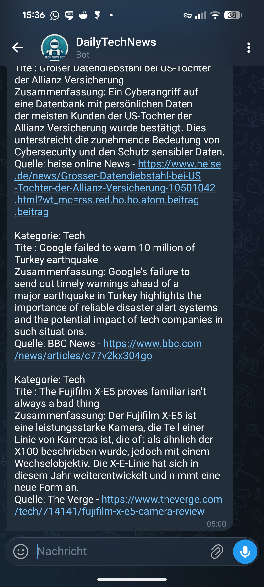

There's a particular kind of learning that only happens when something is actually running. Not a course. Not a prototype. A real thing, doing a real job, failing in real ways — and requiring you to fix it.
Over the past year, I've built a handful of small AI-powered tools in my own time. Not to ship a product. Not to impress anyone. Just to understand, from the inside, how these systems actually behave when you put them in production — even a modest, personal kind of production.
Two of those projects stuck with me. Here's what I built, why, and what surprised me.
Project 1: A daily tech digest that curates itself
The problem I was trying to solve was embarrassingly simple: I follow too many sources, read too few of them, and end up missing things that actually matter. The standard solution is an RSS reader. But I wanted something that did the thinking for me — not just aggregation, but curation.
The bot pulls the latest entries from eleven feeds — The Verge, TechCrunch, Smashing Magazine, MIT Technology Review, OpenAI's blog, and a handful of others. For each source, it takes the top three articles and asks GPT to pick the single most relevant one for people working in tech, UX, or AI — and to explain why in two or three sentences. The result lands in a Telegram channel every morning.
Two design decisions turned out to matter more than I expected.
The first was the exclusion list. Early versions were polluted with car reviews, hardware tests, and consumer product announcements — technically "tech" content, but completely useless for my purposes. I ended up maintaining a simple keyword filter: if an article mentions certain terms — EV range, SUV, specific car brands — it gets dropped before GPT even sees it. Obvious in retrospect, but it took a few days of noisy digests to get there.
The second was source diversity management. Without any correction, the bot would quickly over-index on a handful of prolific sources and repeat the same outlets every day. The fix was a lightweight penalty system: sources that had appeared frequently in the past seven days got deprioritized. Simple, but it made the digest feel genuinely varied rather than dominated by whoever posts most.
What I didn't expect: how much of the interesting work was in the prompt, not the code. The filtering logic, the deduplication, the source penalty — all of that was straightforward. The hard part was writing a system prompt that reliably selected the right article and summarized it in a way that was actually useful. Too vague and the output was generic. Too prescriptive and it became rigid. Finding the right level of instruction took significantly more iteration than anything else in the project.

Project 2: A daily UX lesson delivered to your phone
This one started as a joke. I was thinking about how I'd explain UX fundamentals to a non-designer — someone on a development team who genuinely wants to understand why certain decisions get made, but doesn't have time for a course or a book. What if there was just… a daily nudge? One concept. One example. One thing to think about.
The bot is almost offensively simple. Each morning it sends a prompt to GPT: act as a UX mentor, explain one concept in plain language, give a concrete example, and suggest a follow-up resource. The response arrives in Telegram. That's it.
What made it worth keeping was that it actually changed behavior — mine included. Getting a short, specific lesson at a fixed time has a different quality than browsing articles. There's no decision fatigue. You read it or you don't. And because GPT varies the topics without explicit programming, the lessons feel fresh rather than systematic. Some mornings it's Fitts' Law. Some mornings it's progressive disclosure or error state design. The randomness turned out to be a feature.
GPT at temperature 0.7 produces genuinely varied UX lessons — but "varied" isn't the same as "balanced." Left unchecked, it gravitates toward a handful of well-known concepts and neglects others. A more sophisticated version would track what's been sent and steer away from repetition. That's a future version problem. For now, the occasional repeat is a minor trade-off for zero maintenance.

What both projects have in common
Looking at these two bots side by side, a few things stand out.
Neither of them required much code. The digest bot is around 150 lines of Python. The UX bot is under 30. The technical barrier to building something useful with AI is genuinely low — lower than I expected going in. What requires effort is the design layer: what exactly should this do, for whom, under what conditions, and what should it never do?
Both projects also revealed something about the difference between working and working well. The first version of the digest bot worked — it sent articles every morning. But they were often the wrong articles, from the same sources, repeating topics from the previous day. Getting it to work well meant adding friction in the right places: filters, penalties, clearer prompting. That gap between "runs without errors" and "actually useful" is where most of the real decisions live.
Deployment was intentionally minimal. Both bots run on Render's free tier — which means the server spins down after a period of inactivity. The fix was unglamorous: a UptimeRobot cron job that pings the service every ten minutes, keeping it alive. Not elegant, but free and reliable enough for personal infrastructure that just needs to show up every morning.
And both of them reinforced something I keep coming back to in my day job: the quality of AI output is almost entirely determined by the quality of the question you ask. Prompt engineering sounds like a technical skill. In practice it's a communication skill — being precise about intent, context, and constraints. That's not new. It's just design thinking, applied to a new medium.
Both bots are still running. The digest shows up every morning. The UX lesson is still occasionally surprising. If you're curious about the implementation or want to build something similar, I'm happy to share more detail.